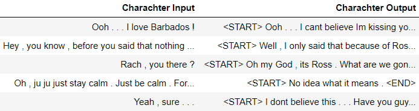

Project Overview
Extracted individual character, statement-response pairs from Friends scripts.
- 
TV show characters were chosen as personalities to be mimicked as show’s writers would have developed a strong and identifiable character personality over the span of several seasons. Moreover TV show transcripts are readily available. F.R.I.E.N.D.S was choose as the TV show for its long runtime and as the raw data scripts were readily available. Joey was chosen as the character to study as he has a distinctive personality in the show that can be described as naive, sarcastic, loving, loud and at times misogynistic. The scrips were split up by episodes with each episode having an associated comma-separated values (CSV) file which held its script. Each script indicated the character speaking and the dialog they spoke along with scene descriptions and stage directions.
Each script was parsed using a python script to extract statement response pairs from each scene. A statement response pair is two dialogs from the script made by two different characters(stater and respondent) the second(response) immediately following the first (statement). All pairs where Joey was the respondent was then collected. This was called the Joey dataset.
As a prerequisite to training a model to mimic Joey’s personality was training a model to sound human in general. To this end the model was pre-trained on an additional dataset of general question and answer pairs. Ideally this would help the model to form more proper English sentence and respond appropriately to questions made by the stater. Around 500 generic data points were used for training . This was called the generic question and answer dataset. 20 percent of each dataset was used as testing data and the remaining was used as training and development data.
Preprocessed and vectorized statement response pairs.

The dialogs were broken into words and punctuation mark. A word here does not have to reference and actual English word but a maximal sequence of characters excluding punctuation marks and white space. Punctuation marks were treated as individual tokens in an attempt to help the model to better understand questions, statements and commands. Numeric data was removed to reduce vocabulary sized and start and end tokens were added responses.
To make the above data ingestible for the embedding layer of the model, every word, punctuation mark and tag was mapped to a numeric token. The Tokenizer consumes the entire corpus to create this mapping which is then applied to every statement and response in the dataset to create a collection of input and output sequence pairs.
The next was Padding the tokenized sequences with zeroes so they all have the same size. The input sequences were pre padded while the output was post padded.
Next, every token in the sequence had to be given a unique vector representation. This was handle by the Embedding Layer. To provide contextual representations of tokens (words, punctuation marks and tags), GloVe 300-dimensional word embeddings were used to initialized the embedding layer weights.
Since the model outputs a softmaxed prediction on each token, the next step involved converting output tokens to one-hot vectors. Since the goal of the decoder was to predict the next token given the current token, the tokenized output sequence was shifted to the left by one step before being converted to one-hot vectors.
Built a Encoder Decoder LSTM model using Keras and batch trained on above datasets.
The Encoder and a Decoder LSTM is a Sequence to Sequence model. Padded input token sequences are converted to a sequence of word embeddings using a Embedding Layer as described above. Each of these word vectors are fed to the Encoder long short-term memory (LSTM) one at a time. The encoder LSTM tries to capture the essence of the encoded input sequence in two thought vectors, the output context vector and the hidden state vector.
Both thought vectors are then passed to the Decoder long short-term memory (LSTM). The decoder LSTM is fed a padded sequence of output word embeddings along with the two thought vectors. The decoder model is trained to use a Dense SoftMax output layer to predict the most likely output word among all words in the vocabulary.

Extracted inference model from trained model weights.
Once the model is trained, an inference encoder and decoder model is created using the trained model weights. The inference encoder model takes in the statement vector and generates two thought vectors, the output context vector and the hidden state vector. The two thought vectors are fed into the inference decoder model along with a sentence start tag. All words predicted by the SoftMax layer are captured until an end tag is generated.

Development was done in Python. Jupyter notebook was used for testing and development. Keras was used to build and train machine learning models. Google Colab GPU infrastructure was used for training.